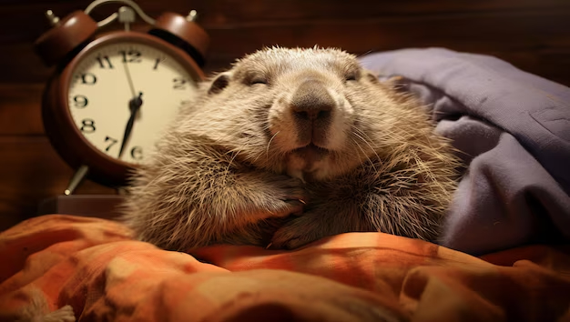
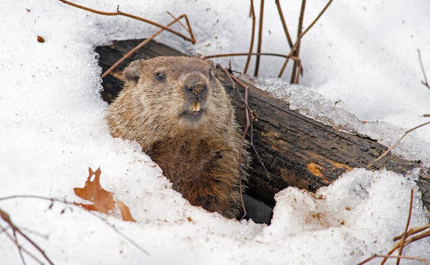
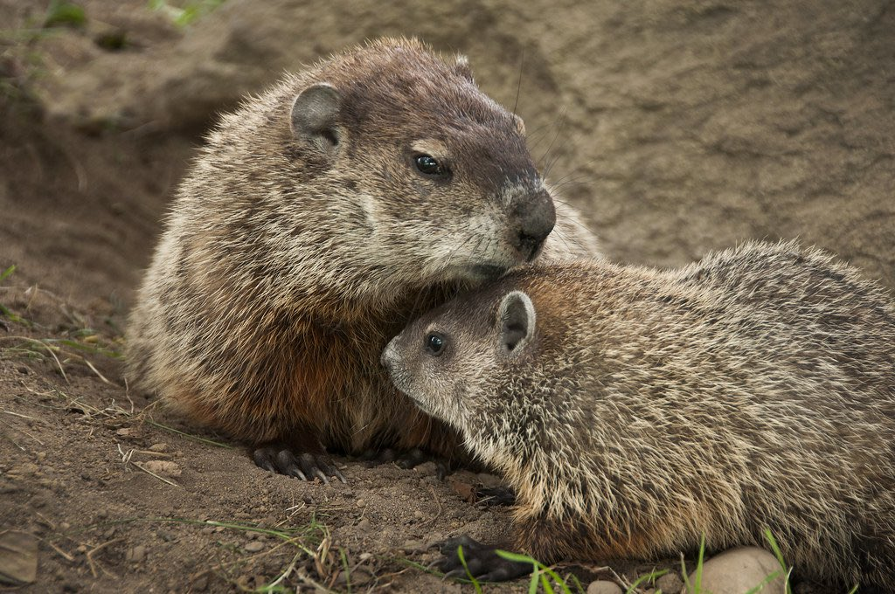
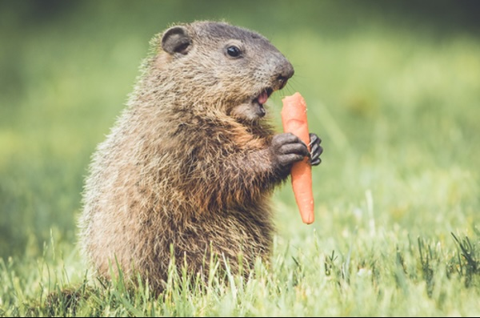

Whistlepig World: Year in the life of a Whistle Pig
Winter and Groundhog Day
Winter: Sleepin' time
Groundhogs truly hibernate. Bears are “pseudo-hibernators,” as their winter body temperature remains at near normal levels, while the groundhog’s falls to 40 degrees. They would freeze if their burrows were not below the frost line. Normal temperature of a groundhog is 100 degrees, but will gradually drop as low as 37 degrees. In this coma-like state, the groundhog is more dead than alive and will not wake if touched.
Late Winter: Predictin' time
According to popular folklore a groundhog can predict winter’s end by emerging from hibernation on February 2 and going back to sleep for six weeks if it sees its shadow. In reality it is too early for spring in this part of the country (Virginia, Maryland and Pennsylvania) where the publicity about Groundhog Day started. The majority of males come out of their burrows in mid- to late February; females appear from late February to mid-March.
Spring and Summer
Spring: Lovin' time
Mating takes place in late February through March. The period from mid-March through April is a time of ravenous appetite and activity, as groundhogs hurry to mate and raise a litter by June. The young must have enough time to prepare for hibernation. Babies born after the end of April have little chance to survive the winter. That is why the breeding season is so short. Thirty to thirty-two days after conception, three to six groundhog kits are born.
Summer/Early Fall: Time to get fat!
In early June, the groundhogs' metabolism slows; food intake also decreases, but their weight increases by 100 percent. July is a hyperactive period of greatest weight gain; metabolism slows and food is converted to body fat in preparation for hibernation. Most of the groundhogs' energy goes to producing the fat deposits on which they will live during hibernation and after emerging from their burrows in late winter when fresh grass and vegetables are not available. In September, ten days to two weeks before going underground for hibernation, the groundhog stops eating and slowly enters hibernation.